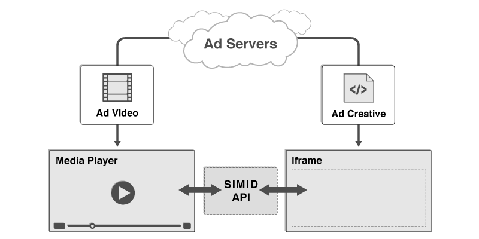
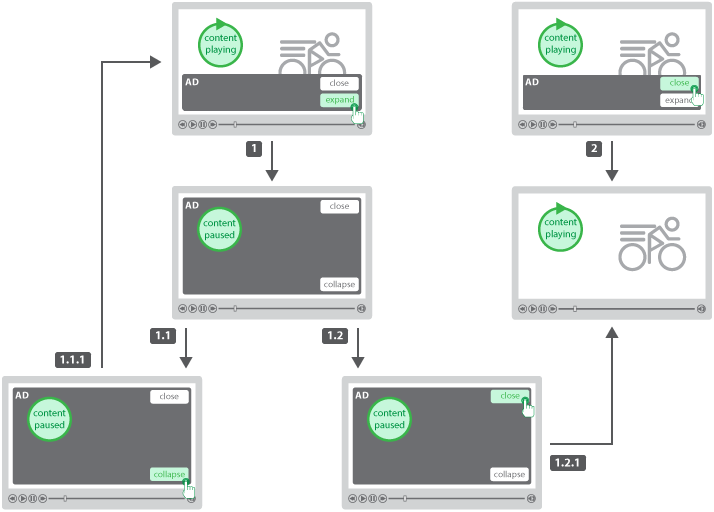
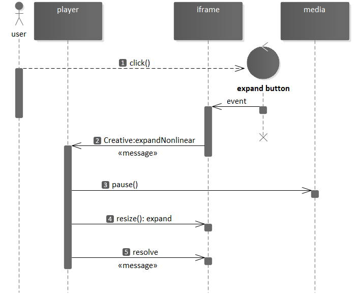
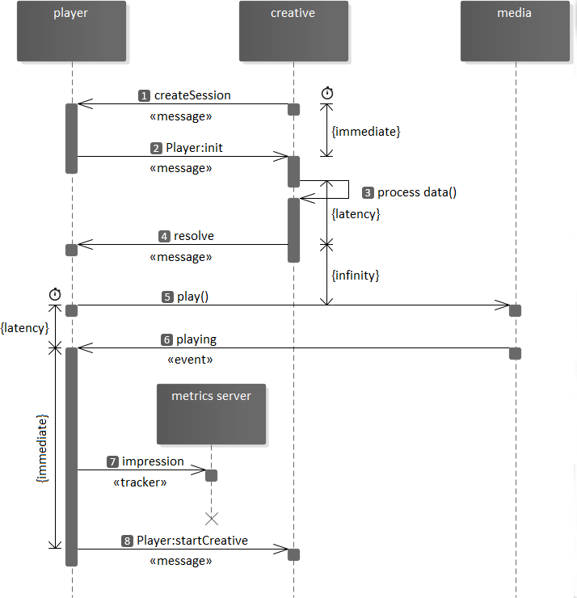
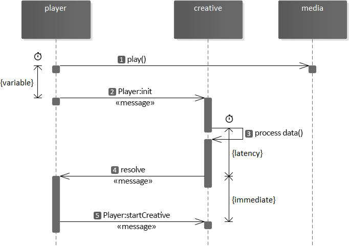
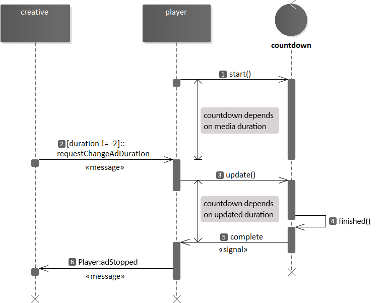
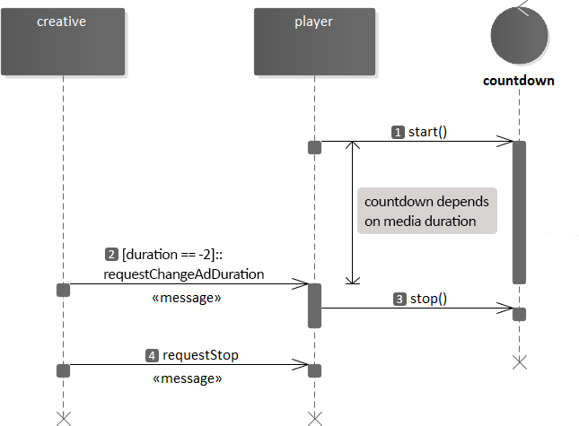
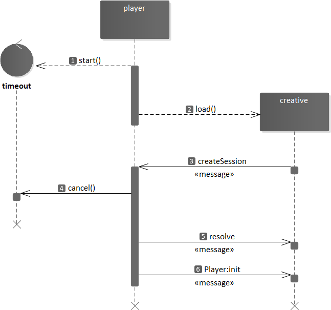

1. Version
1.1.02. Executive Summary
Secure Interactive Media Interface Definition (SIMID) is a standard for providing rich interactivity in the context of streaming audio and video (media) ads. While the Video Ad Serving Template (VAST) standard addresses how publishers discover various metadata assets related to an ad campaign, SIMID addresses how the publisher’s media player should communicate and interface with a rich interactive layer and vice versa. As such, one can think of the SIMID creative as one of the assets listed in a VAST document.
A main tenet of SIMID is the separation of the interactive layer from the media asset. This clear separation allows publisher players to be in control of their streams and enables use cases such as server-side ad insertion (SSAI), as well as live streaming.
SIMID was built with strong security from the ground up, and is designed to be sandboxed from the media player, providing peace of mind to publishers when serving ads from third party services. SIMID aims to provide the tools and controls to allow creatives to offer rich augmented user experiences while degrading gracefully if certain features are not supported.
SIMID ads sandboxing from the publisher player environment

A diagram showing SIMID ads sandboxed from the publisher player environment
SIMID is part of a broader effort to replace the older VPAID standard (more details in this blog post by the IAB Tech Lab). While Open Measurement replaces the use case of verification and measurement, SIMID replaces the use case of interactive streaming media ads, the original intended purpose of the VPAID standard. SIMID provides a path for VPAID deprecation and allows the industry to move to more secure and transparent standards. SIMID aims to gain broad industry adoption by ensuring that the standard is focused on the primary use case of interactivity.
2.1. SIMID vs. VPAID Comparison
VPAID vs. SIMID APIs

SIMID vs. VPAID Comparison.
| Feature | VPAID | SIMID |
|---|---|---|
| Security | Creative directly accesses player DOM and shared global JavaScript context. | Creative is sandboxed into a cross-origin iframe. No player DOM access or shared JavaScript context. |
| Ad media asset management | Creative manages ad video loading and playback. | Player manages ad media loading and playback (audio or video). |
| Pre-caching | Only the VPAID script can be reliably pre-cached. Video asset cannot be pre-cached. | Audio or video asset and SIMID creative can both be pre-cached. |
| Errors influence on performance or UX | Fatal script errors from ad creative can result in significant player or publisher site performance and user experience deterioration (due to shared security sandbox). | Fatal script errors from ad creative do not affect player or publisher site directly. Impact is limited to performance and user experience of the creative, only. |
| SSAI feasibility | SSAI is not possible. | Interactive creatives can be rendered in SSAI context. |
| Latencies | Publishers are at the mercy of VPAID creative implementation efficiency and uncontrollable internal processes (verification, trading, wrapping, etc.). Each of these behaviors can impose significant latencies. | Players can pre-load media and creative assets due to maintaining full control over decisioning, loading and displaying of the ad unit. Ad decisioning latency is removed, risks of internal processes are minimized due to separate security sandboxes. |
| API | Both the player and creative must support specific JavaScript functions. Each component calls functions directly on the other in a shared security sandbox (insecure). | No functions are directly called on either component by the other. All communication is achieved using standard postMessage API and SIMID messaging protocol across separate security sandboxes. |
| Ad blocking | VPAID can prevent an ad from rendering. | SIMID is built for interactivity and was not designed for ad blocking. The Open Measurement SDK (OMID) is expected to support this capability in the future. |
| Verification services | Verification features can be fully implemented and executed in shared DOM and global Javascript context. | SIMID creative cannot access any DOM, elements, or JS context outside of its own security sandbox so is unable to handle any verification use cases. OMID handles the use case for verification allowing SIMID to be focused on interactivity only. |
| Creative wrapping | VPAID ads can load other ads (including other VPAID ads). | Cannot be executed. |
| Audio advertising | Out of standard scope. | Enables interactive components serving with audio ads. |
| Environment constraints | Player must be an HTML video element. | Player can be native or web so long as the SIMID creative has sandboxed DOM access (such as a web view). |
| Resource MIME type | application/javascript | text/html |
2.2. Intended Audience
The SIMID standard is geared toward the digital media advertising community. Anyone who works with digital media advertising products or services can benefit from reading the Introduction sections of this document. The Messaging Protocol, API Reference, and later sections predominantly target software engineers.
2.3. Changes In SIMID 1.1
SIMID version 1.1 introduces the following enhancements:
-
Nonlinear ads support. SIMID offers:
-
New messages § 4.4.3 SIMID:Creative:expandNonlinear, § 4.4.2 SIMID:Creative:collapseNonlinear, and § 4.3.5 SIMID:Player:collapseNonlinear.
-
Related to nonlinear ads data.
-
Additional § 9 Error Codes.
-
Workflow for nonlinear playback.
-
New sample code for nonlinear ads.
-
-
Player handling user navigation to external landing pages for the in-mobile apps servings. For this purpose, SIMID:
-
Introduces a message § 4.4.12 SIMID:Creative:requestNavigation.
-
Offers corresponding data.
-
Includes related § 9 Error Codes.
-
3. Introduction
Throughout this document, the SIMID interactive component is referred to as a “SIMID creative” or “creative”.
Compliance with SIMID requires support for all features and behaviors specificied in this document, unless a given feature or behavior is explicitly designated as optional. Standard RFC language will be used. See https://tools.ietf.org/html/rfc2119 for RFC 2119 for enforcement terminology used in this standard.
3.1. SIMID Interactive Creative Nature
SIMID Assets loading
A SIMID creative can be included in a VAST document by way of an <InteractiveCreativeFile> element. The text within this element must be a url which returns an HTML document.
When loaded into an iframe by a media player, this HTML document will define the SIMID creative’s content, and will direct the web browser or host application to load any additional assets
required by that creative (images, CSS, scripts, etc.).
The <InteractiveCreativeFile> element is defined as a child of the <MediaFiles> element in VAST 4.0.
For more technical details, see the § 5 Referencing a SIMID creative from VAST section.
<MediaFiles>
<MediaFile>
<![CDATA[https://example.com/mediafile.mp4]]>
</MediaFile>
<InteractiveCreativeFile type="text/html" apiFramework="SIMID" variableDuration="true">
<![CDATA[https://adserver.com/ads/creative.html]]>
</InteractiveCreativeFile>
</MediaFiles>
3.2. SIMID Ad Serving Flow
The SIMID ad experience is delivered by a web browser or application concurrently rendering an ad’s streaming audio or video file and its interactive creative file. The media player obtains urls for both files from a VAST document, loads the files, assembles them into a single ad unit, and ensures a cohesive ad experience.
SIMID creative loading and presentation process.

3.3. Player and Creative Communication
A media player and a SIMID creative communicate by sending serialized messages back and forth to each other.
Because a SIMID creative is an HTML document that is served from an advertiser’s web domain, and it is loaded by a media player into an iframe within a web page hosted on a different domain, loading the creative requires the creation of a cross-origin iframe (also known as an "unfriendly iframe"). Due to browser sandbox security restrictions, JavaScript communication across this type of iframe can only be achieved via the standard postMessage API.
SIMID API requirements govern message construction conventions as well as the message data structure. See sections § 8 Messaging Protocol, § 4 API Reference for more information.
3.4. Scope and Limitations
The use of HTML is only required for the SIMID creative, not the publisher property hosting that creative. As long as the publisher can load HTML and communicate with it over the standard postMessage API, it can support SIMID. In practice, this means that SIMID can be hosted in web page iframes, mobile app web views, and other platforms. In fact, SIMID can better support mobile use cases than VPAID because a native app or media player directly controls loading and playback of a SIMID ad unit’s media asset (whereas a VPAID ad unit offers no direct access or control of its internal media asset).
Note: Certain devices, including TV sets and OTT boxes, restrict loading of external assets, have limited HTML rendering capabilities, or are unable to display HTML along with audio or video. These devices are incapable of implementing SIMID. Devices that support HTML and JavaScript can support SIMID - on both client side as well as in server side ad insertion scenarios
SIMID cannot be used to decide which media to show on the client
pre-impression. This is because the media file must be present alongside
the SIMID creative and delivered via the VAST MediaFile node.
SIMID should not be set up to measure viewability.
Any use of the SIMID spec to support something other than interactive or dynamic content within the ad unit is counter to the intentions of this spec.
3.5. Introduction to Nonlinear Ads
Non-linear ads are units that media (video or audio) players serve concurrently with the primary media content. In video players, nonlinear ads overlay a portion of the video.
Non-linear ads implement two states: collapsed and expanded. The player renders the ad in the collapsed (original) state while media content progresses uninterrupted. The expanded ad state typically occupies the entire player viewport and requires the media content to be paused. Users are able to toggle the state of the ad.
Nonlinear Ad States

Unlike the linear ads, there is no media asset that the player needs to render with a non-linear ad.
SIMID supports non-linear ads by providing a non-linear specific API. Both linear and non-linear ads share the same communication protocol and data providers. As with linear ads, the interactive creative is a single resource that the player loads into a cross-origin iframe.
Nonlinear Ad User Experience
-
User clicks on expand button. The player pauses content and expands the creative.
-
User clicks collapse button.
- Player resizes the creatigve to its default state and resumes content playback.
-
User clicks close button.
- Player unloads the creative and resumes media content.
-
User clicks collapse button.
- User clicks close button provided by the default state. Player unloads the creative.
3.5.1. Nonlinear Ads VAST Response
VAST supports nonlinear ads since version 2.0, including interactive ads that implement API frameworks.
VAST response describes nonlinear ads in <NonLinear> node children. The <NonLinear> node attribute’s apiFrmawork value is SIMID. Node
<AdParameters> contains custom ad data for the creative’s consumption.
<Creative>
<NonLinear>
<IFrameResource type="text/html" apiFramework="SIMID">
<![CDATA[https://adserver.com/videoads/simidshell.html]>
</IFrameResource>
<AdParameters>
<![CDATA[{adid:345893,cturi:"https://mycar.com/modelS.html"}]>
</AdParameters>
</NonLinear>
</Creative>
4. API Reference
SIMID API is a set of messages and data structures that ad-rendering parties exchange via § 8 Messaging Protocol.
4.1. Reference Table
4.2. Messages Triggered by Media Element Events
SIMID specifies a group of messages that describe ad media states. The player prepends such messages with the SIMID:Media namespace.
SIMID borrows media-related semantics and naming conventions from the standard HTMLMediaElement behavior. In player implementations where an HTMLMediaElement is not used, the player must translate events and property values into the associated SIMID:Media message.
In HTML environments, SIMID:Media messages contain the original media event type.
The player must report SIMID:Media messages immediately after the associated event occurs.
The player must not queue messages in cases where the creative iframe initialization happens in the middle of the ad media playback. The player posts only messages that communicate events that occur after the iframe initialization.
SIMID:Media messages are information-only; they do not trigger resolve/reject responses from the creative.
The player may elect to report all standard HTML media events to the creative. However, the creative should not expect to receive messages with optional types. (See table below.)
Some SIMID:Media messages - durationchange, error, timeupdate, and volumechange - require additional data provided with Message.args parameters.
Required and optional media event types.
| Event Name | Required | Event Name | Required | Event Name | Required | ||
|---|---|---|---|---|---|---|---|
abort
| interruptend
| seeked
| |||||
canplay
| loadeddata
| seeking
| |||||
canplaythrough
| loadedmetadata
| stalled
| |||||
durationchange
| loadstart
| suspend
| |||||
emptied
| pause
| timeupdate
| |||||
encrypted
| play
| volumechange
| |||||
ended
| playing
| waiting
| |||||
error
| progress
| ||||||
interruptbegin
| ratechange
|
4.2.1. SIMID:Media:durationchange
When the duration of the media changes due to the player receiving the media resource metadata (in HTML, HTMLMediaElement dispatches the durationchange event), the player posts a SIMID:Media:durationchange message.
dictionary {MessageArgs required float ; };duration
duration,- The duration of the media in seconds. In HTML, HTMLMediaElement.duration value.*
- In SSAI,
HTMLMediaElement.durationvalue does not express the actual ad media duration. In such cases, the player must compute the ad’s actual media length.
4.2.2. SIMID:Media:ended
When the media playback completes (in HTML,HTMLMediaElement dispatches an ended event), the player posts a SIMID:Media:ended message.
4.2.3. SIMID:Media:error
When playback throws an exception (in HTML,HTMLMediaElement dispatches an error event), the player posts a SIMID:Media:error message.
dictionary {MessageArgs required unsigned short ;error required DOMString ; };message
error,-
In HTML, the value of
HTMLMediaElement.error.code. Codes:1The media download was canceled2Network error3The player failed to decode the media4Environment does not support media resource
message,- In HTML, the value of
HTMLMediaElement.error.message.
4.2.4. SIMID:Media:pause
When the media pauses (in HTML,HTMLMediaElement dispatches a pause event), the player posts a SIMID:Media:pause message.
4.2.5. SIMID:Media:play
When media playback starts as a result of autoplay or its state is no longer paused (in HTML,HTMLMediaElement dispatches a play event), the player posts a SIMID:Media:play message.
4.2.6. SIMID:Media:playing
The player posts aSIMID:Media:playing message in one of the following cases:
-
the media has enough data to start playback;
-
the media recovered from
stalledstate; -
playback restarts;
-
after seek operation completion.
In HTML, the player posts a Media:playing message when HTMLMediaElement dispatches a playing event.
4.2.7. SIMID:Media:seeked
When the user finished moving playhead into a new position (in HTML,HTMLMediaElement dispatches a seeked event), the player posts a SIMID:Media:seeked message.
4.2.8. SIMID:Media:seeking
When the user initiates seek operation (in HTML,HTMLMediaElement dispatches a seeking event), the player posts a SIMID:Media:seeking message.
4.2.9. SIMID:Media:stalled
When media data is not available for rendering (in HTML,HTMLMediaElement dispatches a stalled event), the player posts a SIMID:Media:stalled message.
4.2.10. SIMID:Media:timeupdate
The player communicates media playhead position by posting aSIMID:Media:timeupdate message. The message Media:timeupdate frequency should be not less than every 250ms.
In HTML, the player sends a Media:timeupdate message HTMLMediaElement dispatches a timeupdate event.
dictionary {MessageArgs required float ; };currentTime
currentTime,- The value in seconds. In HTML,
HTMLMediaElement.currentTimeproperty value.
In Server-Side Ad Insertion, the client-side media playback is a continuous stream which requires additional currentTime calculations. For the current ad, the player must compute the currentTime value as a delta between the actual playhead position and the time the ad started.
4.2.11. SIMID:Media:volumechange
When the media audio state changes (in HTML,HTMLMediaElement dispatches a volumechange event), the player posts a SIMID:Media:volumechange message.
dictionary {MessageArgs required float ;volume required boolean ; };muted
volume,- The number between
0and1.* muted,trueif audio is muted.*
- The properties
volumeandmuteddescribe two independent audio states. While the media is muted, itsvolumemay be greater than zero; whilevolumeis zero, the media may be unmuted.
4.3. Messages from the player
SIMID specifies a group of messages that enables the player to transmit data, instructions, or state changes to the creative. The player prepends such message types with theSIMID:Player namespace.
SIMID:Player messages do not communicate ad media states; SIMID dedicates § 4.2 Messages Triggered by Media Element Events to report media status.
While some SIMID:Player messages expect resolve and/or reject creative responses, other messages do not require replies.
SIMID:Player messages summary.
4.3.1. SIMID:Player:adSkipped
The player posts aSIMID:Player:adSkipped message immediately after the user ends ad experience. For example, by clicking on the player-owned
button. The player must stop the media and hide the creative iframe before sending the Player:adSkipped message.
The player waits for the resolve creative response. The player may time out if the creative takes too long to respond and unload the iframe. The timeout should be reasonable to allow creative to conclude ad-end logic.
4.3.1.1. resolve
The creative must respond toPlayer:adSkipped with resolve once its internal ad-end processes finalize. When the player receives resolve, it unloads the creative iframe.
4.3.2. SIMID:Player:adStopped
The player posts aSIMID:Player:adStopped message immediately after it terminates the ad for any reason other than a user generated skip. See § 4.3.1 SIMID:Player:adSkipped.
The player must stop media playback and hide the creative iframe before reporting Player:adStopped. The player must wait for a resolve response from the creative allotting a reasonable timeout to accommodate creative’s needs to finalize the ad-end logic.
dictionary {MessageArgs required unsigned short ; };code
code,-
Ad stop cause code. Values:
0Unspecified1User-initiated close2Auto-close due to media playback completion3Player-initiated close before media playback completion4Creative-initiated close5Nonlinear duration complete.
4.3.2.1. resolve
The creative must respond toPlayer:adStopped with resolve once its internal ad-end processes finalize. When the player receives resolve, it unloads the creative iframe.
4.3.3. SIMID:Player:appBackgrounded
Within mobile in-app ads, when the app moves to the background, the player posts aSIMID:Player:appBackgrounded message.
4.3.3.1. resolve
The creative resonds toappBackgrounded with resolve message.
4.3.4. SIMID:Player:appForegrounded
Within mobile in-app ad executions, when the app moves from the background to the foreground, the player posts aSIMID:Player:appForegrounded message.
4.3.5. SIMID:Player:collapseNonlinear
The player may resize the ad to its default dimensions without the creative requesting a collapse. The player may collapse the ad based on its internal logic or in response to the user resuming media playback.
The player posts the § 4.3.5 SIMID:Player:collapseNonlinear message before it resizes the creative iframe.
The § 4.3.5 SIMID:Player:collapseNonlinear is an information-only message; there are no associated resolution responses.
4.3.6. SIMID:Player:fatalError
The player posts aSIMID:Player:fatalError message when it encounters exceptions that disqualify the ad from displaying any longer. If feasible, the player stops the ad media.
Regardless of the player’s ability to terminate playback, the player should hide creative iframe and wait for resolve response before unloading iframe.
dictionary {MessageArgs required unsigned short ;errorCode DOMString ; };errorMessage
errorCode,- See § 9 Error Codes.
errorMessage,- Additional information
4.3.6.1. resolve
The creative must respond toPlayer:fatalError with resolve. After resolve arrives, the player should remove the iframe.
4.3.7. SIMID:Player:init
The purpose of theSIMID:player:init message is to transport data to assist with the interactive component initialization. See § 6.2 Typical Initialization WorkFlow and § 6.4 Uninterrupted Initialization WorkFlow.
The creative must respond to Player:init with either § 4.3.7.1 resolve or § 4.3.7.2 reject.
dictionary {MessageArgs required EnvironmentData ;environmentData required CreativeData ; };creativeData
environmentData,- Information about publisher’s environment and media player capacities.
creativeData,- Information that pertains to the specific creative.
dictionary {CreativeData required DOMString ;adParameters DOMString ; };clickThruUrl
adParameters,- Typically, the value of VAST
<AdParameters>node. clickThruUrl,- Value of VAST
<ClickThrough>node.
dictionary {EnvironmentData required Dimensions ;videoDimensions required Dimensions ;creativeDimensions required boolean ;fullscreen required boolean ;fullscreenAllowed required boolean ;variableDurationAllowed required SkippableState ;skippableState required DOMString ;version DOMString ;siteUrl DOMString ;appId DOMString ;useragent DOMString ;deviceId boolean ;muted float ;volume NavigationSupport ;navigationSupport CloseButtonSupport ;closeButtonSupport float ; };nonlinearDuration dictionary {Dimensions required long ;x required long ;y required long ;width required long ; };height enum {SkippableState ,"playerHandles" ,"adHandles" };"notSkippable" enum {NavigationSupport ,"adHandles" ,"playerHandles" };"notSupported" enum {CloseButtonSupport ,"adHandles" };"playerHandles"
videoDimensions,- Communicates media element coordinates and size.
creativeDimensions,- Communicates creative iframe coordinates and size the player will set when iframe becomes visible.
fullscreen,- The value
trueindicates that the player is currently in fullscreen mode. fullscreenAllowed,-
Communicates the player’s capacity to toggle screen modes.
- The value
trueindicates that creative may request screen mode change. - The value
falsedenotes that the player will reject calls to change screen mode.*
- The value
variableDurationAllowed,-
Communicates player’s capacities† to:
- interrupt ad playback progress – the ability to pause the media;
- extend ad user experience length beyond ad media duration after ad playback completion;
- accommodate creative’s ad stop request.
trueasserts that the player can:- pause media playback in response to creative’s requests;
- extend ad experience after media playback completion (and abstaining from ad unloading) if the creative posts ad duration change instructions;
- accommodate creative’s ad stop request.‡
skippableState,-
Expresses:
- player’s ability to skip the ad;†
- VAST skippability-associated instructions logic management;
- button handling delegation.
playerHandlesindicates that all of the following applies:- the publisher controls skippability logic (including handling of VAST
skipoffsetdirectives); - either VAST contains
skipoffsetor the skippability is the publisher-administered behavior; - the player implements the button;
- the player will ignore skip requests from the creative.
adHandlessignals that the player:- can skip the ad;
- does not implement internal button;
- disregards VAST skippability directives;
- will skip the ad in response to § 4.4.16 SIMID:Creative:requestSkip message.§
notSkippabledeclares that the player:- cannot skip the ad;
- ignores VAST skippability instructions;
- will disregard skip request from the creative.
playerHandlesandnotSkippable, the creative avoids the button drawing. version,- The SIMID version the player implements.
muted,trueif the player § is muted.◊volume,- player’s § volume – expressed as a number between
0and1.0. siteUrl,- The URI of the publisher’s site. May be full or partial URL.
appId,- The ID of the mobile app, if applicable.
useragent,- The information about SDKs as well as the player’s vendor and version. The value should comply with VAST-specified conventions.
deviceId,- IDFA or AAID
NavigationSupport,-
Indicates how clickthroughs should be handled.
- playerHandles Indicates that because of the platform, the player should handle clickthrough via § 4.4.12 SIMID:Creative:requestNavigation. Mobile platforms are often this way.
- adHandles Indicates that the creative should open tabs or windows in response to user clicks. Web platforms are often this way.
- notSupported The platform does not support clickthrough.
CloseButtonSupport,-
Indicates what should render a close button for nonlinear ads.
- playerHandles Indicates the player will render a close button for nonlinear ads.
- adHandles Indicates that the creative may render a close button. If the player will not render a close button it should always use adHandles for this parameter.
nonlinearDuration,- The duration in seconds that a nonlinear will play for. Often this might be the same as minSuggestedDuration from the VAST response or the duration of the content.
- see § 4.4.10 SIMID:Creative:requestFullscreen and § 4.4.11 SIMID:Creative:requestExitFullscreen messages.
- In SSAI, live broadcast, and other time-constrained environments, the player must support uninterrupted media (both content and ads) playback progress. Specifically, the player may not be able to pause the media, shorten ad, or extend user ad experience.
- see § 4.4.13 SIMID:Creative:requestPause, § 4.4.14 SIMID:Creative:requestPlay, § 4.4.8 SIMID:Creative:requestChangeAdDuration, and § 4.4.17 SIMID:Creative:requestStop.
- SIMID does not expect device audio state information.
- Values of
mutedandvolumeare independent. While the player is muted,volumecan be greater than zero; thevolumezero does not mean the player is muted.
4.3.7.1. resolve
The creative acknowledges the initialization parameters.
If the creative delays calling resolve, see § 6.5 Creative Delays Resolving Init.
4.3.7.2. reject
The creative may respond with a reject based on its internal logic.
dictionary {MessageArgs required unsigned short ;errorCode DOMString ; };reason
errorCode,- See § 9 Error Codes.
reason,- Optional information about rejection cause.
The player then will follow the rejection workflow. See § 6.6 Creative Rejects Init.
4.3.8. SIMID:Player:log
The purpose of the Player:log message is to convey optional, primarily debugging, information to the creative.Note: In SIMID prefixing log messages with “WARNING:” has a specific meaning. The player is communicating performance inefficiencies or specification deviations aimed at creative developers. For example, if the creative sends the requestChangeVolume message but does not use the correct parameters, a “WARNING:” message is appropriate.
dictionary {MessageArgs required DOMString ; };message
message,- Logging information.
4.3.9. SIMID:Player:resize
When the player changes any of ad components’ size, it posts theSIMID:Player:resize message. The message describes the media and creative sizes, independently, even if the dimensions are identical.
dictionary {MessageArgs required Dimensions ;videoDimensions required Dimensions ;creativeDimensions required boolean ; };fullscreen dictionary {Dimensions required long ;x required long ;y required long ;width required long ; };height
mediaDimensions,- Media element size and coordinates.
creativeDimensions,- SIMID iframe size and coordinates.*
fullscreen,- Value is
truewhen the ad is in fullscreen mode.
- If the iframe is invisible at the time the player posts
resizemessage, the parametercreativeDimensionscommunicates forthcoming values: iframe’s size, and coordinates once it is displayed.
4.3.10. SIMID:Player:startCreative
See § 6.3 Typical Start Creative WorkFlow
The player posts SIMID:Player:startCreative message when it is ready to make the iframe visible. The player must transmit Player:startCreative as close to the first media frame rendering as possible. The player waits for a § 4.3.10.1 resolve response to display the SIMID iframe. The interactive creative should be ready to reply to Player:startCreative immediately.
§ 4.3.7 SIMID:Player:init section describes the flow that precedes the instant the player emits a Player:startCreative message.
4.3.10.1. resolve
By postingresolve, the interactive creative acknowledges that it is ready for display. The creative should be ready to respond immediately. The player makes the iframe visible upon a resolve receipt
Refer to § 6.3 Typical Start Creative WorkFlow 2.
If the creative fails to reply with a resolve by the time ad media playback completes, the player reports VAST error tracker with the errorCode 1213. See § 9 Error Codes.
4.3.10.2. reject
When the creative responds with a reject, the player may unload the iframe. The player reports VAST error tracker with theerrorCode the creative supplied.
dictionary {MessageArgs required unsigned short ;errorCode DOMString ; };reason
errorCode,- See § 9 Error Codes.
reason,- Additional information.
4.4. Messages from the Creative to the Player
The creative posts messages to the player to requests the ad’s state changes, obtain data, and to send notifications. The creative prefixes its messages with the namespaceSIMID:Creative.
SIMID:Creative messages may require the player to accept and process arguments. With some messages, the creative expects the player to respond with resolutions.
Note: In SIMID, the creative initializes the session and posts the first message, createSession. See § 8.4 Session Layer.
SIMID:Creative messages summary.
4.4.1. SIMID:Creative:clickThru
The SIMID:Creative:clickThru message notifies the player of a clickthrough for event tracking. SIMID delegates clickthrough execution to the creative, including redirecting the user to the landing page. The interactive component posts clickThru only when the creative classifies a user interaction as a clickthrough.
The interactive component posts the Creative:clickThru message only when the creative classifies a user interaction as a clickthrough. To open the landing page in the situations when user interaction does not constitute clickthrough, the creative must utilize § 4.4.12 SIMID:Creative:requestNavigation message.
Note: Not all clickthrough metrics require the opening of a landing page. The player must assume that a clickThru message that does not provide a landing page URL is still a valid clickthrough notification.
The message, clickThru, is not an explicit media-pausing directive to the player. If the environment permits, the player must pause ad media in all cases when the user navigates away from the player-hosting page or app, including clickthrough. See Page Visibility API.
dictionary {MessageArgs short ;x short ;y boolean ;playerHandles DOMString ; };url
x,- The click left offset in the creative’s coordinate system.
y,- The click top offset in the creative’s coordinate system.
playerHandles,- When
true- creative requests the player to open the landing page. The creative must not require the player to open the external page if the § 4.3.7 SIMID:Player:init message argumentnavigationSupportvalue is notplayerHandles. url,- Landing page address. In the cases when the creative handles landing page redirect internally, it may not provide
urlvalue. In such scenarios, the creative setsplayerHandlesvalue tofalse.
Creative:clickThru Handling

- User clicks on clickthrough button.
- Creative sets
playerHandles = trueand posts § 4.4.1 SIMID:Creative:clickThru message. - Player posts § 4.4.1.1 resolve message before redirecting user to the landing page.
- Player opens the landing page window.
4.4.1.1. resolve
In the scenarios when the player handles landing page redirects, it responds withresolve before the landing page opens.
4.4.1.2. reject
The player postsreject if the creative requested the player to handle navigation when the player does not implement user redirects, creative fails to provide url, or the url is invalid. The player provides the errorCode 1214.
dictionary {MessageArgs required short ;errorCode DOMString ; };reason
errorCode,- 1214.
reason,- Additional information. For example: "Invalid URL".
4.4.2. SIMID:Creative:collapseNonlinear
When the creative is ready to collapse, it posts aCreative:collapseNonlinear message. In response to collapseNonlinear, the player resizes the ad to its original state and resumes the content media playback.
Creative:collapseNonlinear Handling

- User clicks on collapse button.
- Creative posts § 4.4.2 SIMID:Creative:collapseNonlinear message.
- Player resizes the creative to its original (default) dimensions.
- Player resumes media playback.
- Player posts § 4.4.2.1 resolve message.
4.4.2.1. resolve
When the player resizes the ad, it posts a resolve message.4.4.3. SIMID:Creative:expandNonlinear
The creative posts Creative:expandNonlinear when a user wants to expand the ad (by clicking expand control/button that default banner provides). Auto-expand is strongly discouraged and goes against industry guidelines.
Under normal circumstances, the player pauses the media. In cases when the content is video, the player resizes the creative iframe to the dimensions of the video and places the expanded creative at video zero coordinates.
If the player communicates to the creative that it has no capacity to expand the ad with § 4.3.7 SIMID:Player:init message, the creative does not provide an expand button or post the Creaitve:expandNonlinear message.
Creative:expandNonlinear Handling
- User clicks on expand button.
- Creative posts § 4.4.3 SIMID:Creative:expandNonlinear message.
- Player pauses media.
- Player resizes the creative to its expanded dimensions.
- Player posts § 4.4.3.1 resolve message.
4.4.3.1. resolve
Once the player resizes the ad, it posts aresolve message. The player provides the expanded size dimensions and position with the resolve message.args
dictionary {MessageArgs required Dimensions ; };creativeDimensions dictionary {Dimensions required long ;x required long ;y required long ;width required long ; };height
creativeDimensions,- SIMID iframe size and coordinates.
4.4.3.2. reject
If the player declines the expansion request, it posts areject message.
4.4.4. SIMID:Creative:fatalError
The creative postsSIMID:Creative:fatalError in cases when its internal exceptions prevent the interactive component from further execution. In response to the Creative:fatalError message, the player unloads the SIMID iframe and reports VAST error tracker with the errorCode specified by the creative. The ad media playback must stop, if possible.
dictionary {MessageArgs required unsigned short ;errorCode DOMString ; };errorMessage
errorCode,- See § 9 Error Codes.
errorMessage,- Additional information.
4.4.5. SIMID:Creative:getMediaState
The creative posts aSIMID:Creative:getMediaState message to request the current ad media states values.
4.4.5.1. resolve
The player should always respond toCreative:getMediaState with a resolve, including situations when the player is unable to provide all expected values.
dictionary {MessageArgs DOMString ;currentSrc float ;currentTime float ;duration boolean ;ended boolean ;muted boolean ;paused float ;volume boolean ; };fullscreen
currentSrc,- The URI to the media publisher chooses for the playback. This value is optional and may not be provided in the case of server side ad insertion.
currentTime,- The time elapsed since the first ad media frame.
duration,- Ad media duration.
ended,- In HTML, the value of
HTMLMediaElement.endedattribute. muted,- In HTML, the value of
HTMLMediaElement.mutedattribute. paused,- In HTML, the value of
HTMLMediaElement.pausedattribute. volume,- In HTML, the value of
HTMLMediaElement.volumeattribute. fullscreen,- he value is
trueif the media element is in full screen..
4.4.6. SIMID:Creative:log
The messageSIMID:Creative:log enables the creative to communicate arbitrary information to the player.
Note: If the log message purpose is to notify the player about the player’s non-standard behavior, the creative prepends Message.args.message value with “WARNING:” string. Warning messages are used to inform player developers about occurances of non-fatal issues.
dictionary {MessageArgs required DOMString ; };message
message,- Logging information.
4.4.7. SIMID:Creative:reportTracking
The SIMID:Creative:reportTracking message enables a creative to delegate arbitrary metrics reporting to the player.
The creative may inject macros into trackers URIs.
In response to the reportTracking message, the player must:
- Send the trackers specified by the message as soon as possible.
- Replace VAST-supported macros with the corresponding values.
- Accept and send the trackers with custom macros – leave non-standard macros intact unless the publisher-ad integration involves custom macros processing.
dictionary {MessageArgs required Array ; };trackingUrls
trackingUrls,Arrayof URIs.
4.4.7.1. resolve
The player posts aresolve after it sends the trackers.
4.4.7.2. reject
The player posts areject if it did not send the trackers.
dictionary {MessageArgs required unsigned short ;errorCode DOMString ; };reason
errorCode,- See § 9 Error Codes.
reason,- Additional information.
4.4.8. SIMID:Creative:requestChangeAdDuration
In response to user interaction, the creative is requesting a new ad duration.
In SIMID, ad’s media determines the initial ad duration. The ad span may change due to user interaction. When ad duration changes, the creative posts Creative:requestChangeAdDuration message that communicates an updated value. In response to the requestChangeAdDuration message, the player adjusts ad-end timing and updates its ad progress UI (eg., countdown).
The creative expresses a known duration value in seconds. In cases where the duration is unknown (typically due to user interaction), the value is -2. With a known duration, the player unloads the ad automatically once the countdown (ad remaining time) reaches zero. See § 6.10.1 Ad Extends Beyond Media Completion 456).
When the duration value is -2, the player displays the ad indefinitely until the creative posts § 4.4.17 SIMID:Creative:requestStop. See § 6.10.3 Ad Duration Changed Workflow - Unknown Time step 4).
Note: The player communicates its capacities to modify the ad duration with § 4.3.7 SIMID:Player:init message args parameter variableDurationAllowed. If the value of variableDurationAllowed is false, the creative refrains from posting requestChangeAdDuration message.
dictionary {MessageArgs required float ; };duration
duration,- Value in seconds for a known duration.
The value-2indicates an unknown duration.
See § 6.10 Ad Duration Changed Workflow.
4.4.8.1. resolve
By postingresolve response to requestChangeAdDuration message, the player signals that it will respect requested duration by modifying the ad duration-dependent behaviors.
Note: The player must accommodate an ad duration change directive if the value of the § 4.3.7 SIMID:Player:init message parameter variableDurationAllowed is true.
4.4.8.2. reject
By postingreject response to requestChangeAdDuration message, the player states that:
- It ignored the duration change request;
- Ad media playback continues uninterrupted;
- The player will stop and unload the ad once any of the prescribed player-side ad-end triggers arise.
Note: The single SIMID-supported reason for a reject in response to requestChangeAdDuration is the player’s inability to alter media progress.
4.4.9. SIMID:Creative:requestChangeVolume
The creative requests ad volume change by posting aSIMID:Creative:requestChangeVolume message.
dictionary {MessageArgs required float ;volume required boolean ; };muted
volume,- The number between
0and1.* muted,trueif media audio should be muted.*
- Properties
volumeandmuteddescribe two independent audio states. While media is muted, its volume may be greater than zero; at the same time with zero volume, media may be unmuted.
4.4.9.1. resolve
By postingresolve message, the player signals it has changed the media audio states to the requested values.
4.4.9.2. reject
By postingreject message, the player signals that it did not change the audio state.
4.4.10. SIMID:Creative:requestFullscreen
The creative requests the player to transition the ad into fullscreen mode by posting aSIMID:Creative:requestFullscreen message.
Note: the player communicates its capacity to toggle screen modes with § 4.3.7 SIMID:Player:init message parameter fullscreenAllowed. When the value of fullscreenAllowed is false, the creative refrains from posting Creative:requestFullscreen message.
4.4.10.1. resolve
By postingresolve response to requestFullscreen message, the player signals that it moved both the media element and the SIMID iframe into fullscreen mode.
4.4.10.2. reject
By postingreject response to requestFullscreen message, the player signals that it did not change the screen mode because it is either:
- Incapable of toggling between screen modes.
- Already in the fullscreen mode.
- Disallows fullscreen mode.
4.4.11. SIMID:Creative:requestExitFullscreen
The creative requests the player to transition the ad into normal-screen mode by posting aSIMID:Creative:requestExitFullscreen message.
Note: the player communicates its capacity to toggle screen modes with § 4.3.7 SIMID:Player:init message parameter fullscreenAllowed. When the value of fullscreenAllowed is false, the creative refrains from posting Creative:requestExitFullscreen message.
4.4.11.1. resolve
By postingresolve response to requestExitFullscreen message, the player signals that it moved both the media element and the SIMID iframe into normal-screen mode.
4.4.11.2. reject
The player responds torequestExitFullscreen message with a reject when it did not change the screen mode because it is either:
- Incapable of toggling between screen modes or
- Already in the normal-screen mode.
4.4.12. SIMID:Creative:requestNavigation
In environments like mobile apps, the player manages redirections of the user to external landing pages. In response to § 4.4.12 SIMID:Creative:requestNavigation, the player opens a browser window with the location the creative provides with the message.args.uri parameter.
In web environments, the creative manages navigation.
The creative sends § 4.4.12 SIMID:Creative:requestNavigation in response to the user’s interaction. The creative does not request navigation without user interaction.
dictionary {MessageArgs required string ; };uri
uri,- The address of the landing page.
Creative:requestNavigation Handling

- User clicks on navigation button.
- Creative posts
requestNavigationmessage. -
Player responds to § 4.4.12 SIMID:Creative:requestNavigation.
- Player responds with § 4.4.12.2 reject message if it cannot redirect the user.
- Player responds with § 4.4.12.1 resolve message before opening the landing page.
- Player pauses media.
- Player opens the landing page.
4.4.12.1. resolve
The player posts resolve before it opens the window to assure the creative receives the message prior to app backgrounding.
4.4.12.2. reject
The player did not navigate to a new window.
4.4.13. SIMID:Creative:requestPause
The creative requests the player to pause media playback by posting aSIMID:Creative:requestPause message.
Note: the player communicates its capacity to interrupt media playback with § 4.3.7 SIMID:Player:init message, parameter variableDurationAllowed. The creative must not post requestPause if the player sets variableDurationAllowed value to false.
4.4.13.1. resolve
The player replies toCreative:requestPause with a resolve if it paused the media.
4.4.13.2. reject
The player replies toCreative:requestPause with a reject if it did not pause the media or the playback is already paused.
4.4.14. SIMID:Creative:requestPlay
The creative requests the player to resume media playback by posting aSIMID:Creative:requestPlay message.
Note: the player communicates its capacity to interrupt media playback with § 4.3.7 SIMID:Player:init message, parameter variableDurationAllowed. The creative must not post requestPlay if the player sets variableDurationAllowed value to false.
4.4.14.1. resolve
The player replies toCreative:requestPlay with a resolve if it resumed media playback.
4.4.14.2. reject
The player replies toCreative:requestPlay with a reject if it did not resume the media or the playback is already in progress.
4.4.15. SIMID:Creative:requestResize
The creative requests ad resize by posting a SIMID:Creative:requestResize message.
The player must not resize the ad unless it can change the dimensions of both media element and SIMID iframe to the values specified by the Creative:requestResize message.
Note: the message requestResize must not be used to change screen mode. See the § 4.4.10 SIMID:Creative:requestFullscreen and § 4.4.11 SIMID:Creative:requestExitFullscreen messages.
dictionary {MessageArgs required Dimensions ;mediaDimensions required Dimensions ; };creativeDimensions dictionary {Dimensions required long ;x required long ;y required long ;width required long ; };height
mediaDimensions,- Media element size and coordinates.
creativeDimensions,- SIMID iframe size and coordinates.
4.4.15.1. resolve
The player replies torequestResize with a resolve if it has resized the ad and set the dimensions to the values specified by the requestResize message.
4.4.15.2. reject
The player responds torequestResize with reject when it ignores the message or is unable to complete the resizing.
4.4.16. SIMID:Creative:requestSkip
The creative requests the player skip ad playback if possible.
4.4.16.1. resolve
If the player skips the ad, it responds with aresolve. The player then goes through its skip workflow. See § 4.3.1 SIMID:Player:adSkipped 567
4.4.16.2. reject
The player replies with areject if it cannot skip the ad. With the skip rejection:
- The media playback continues.
- The iframe remains visible.
- The player continues posting
SIMID:MediaandSIMID:Playermessages to the SIMID iframe. - The creative maintains two-way communication with the player; it waits for, and responds to, the player transmitting ad completion related messages.
4.4.17. SIMID:Creative:requestStop
The creative requests the player stop video playback if possible.
4.4.17.1. resolve
If the player can stop the ad, it responds with aresolve (diagram 13, 4). The player then goes through § 6.9.6 Ad Requests Stop workflow (diagram 13, 567).
4.4.17.2. reject
If the player cannot stop the ad, it responds with areject. With the requestStop rejection:
- The media playback continues - if not previously ended;
- The iframe remains visible;
- The player continues posting messages to the iframe.
The creative keeps communication with the player open; it waits for, and responds to, the player transmitting ad completion related messages.
5. Referencing a SIMID creative from VAST
The VAST 4.x response designates the <InteractiveCreativeFile> element to describe the ad’s interactive component data. For SIMID, <InteractiveCreativeFile> element must include the following required attributes and their values: type="text/html" and apiFramework="SIMID".
<InteractiveCreativeFile type="text/html" apiFramework="SIMID" variableDuration="true">
<![CDATA[https://adserver.com/ads/creative.html]]>
</InteractiveCreativeFile>
The value of the apiFramework attribute identifies SIMID as the required API for the creative. Players that do not support the SIMID API may load
an audio or video file included with the ad, but they will not load or play the SIMID creative.
Media players that do support the SIMID API should handle version negotiation between the creative and the media player via the § 6.1 How to Handle Ad Loading algorithm. The SIMID API version is not identified by any element or attribute in the VAST file.
A third, optional attribute which may be included on the InteractiveCreativeFile element is variableDuration="true".
If present, this attribute indicates that the ad unit is only playable if
the media player allows the creative to pause playback of the ad’s audio or video and extend the duration of the ad break (for example, with
interactive content such as a game or survey). If the player does not support or allow this capability, then it must not render
the current ad’s audio/video or SIMID creative. The player should error out the ad instead (and either resume its primary content or continue
on to the next ad in the current ad pod).
6. Common Workflows
6.1. How to Handle Ad Loading
The player must follow this workflow for loading an ad. See Diagram - SIMID Loading and Initialization below.
-
The player creates an iframe for the SIMID interactive component. The iframe should start hidden. While invisible, the iframe must be capable of executing JavaScript and loading resources.
-
The player starts listening to the
messageevent on the window that is the parent of the creative iframe. -
The player sets the iframe src attribute to the URL provided by the creative’s VAST
<InteractiveCreativeFile/>element. The player must assume the iframe is cross-origin. -
The player waits until the creative initializes a session and posts
createSessionmessage (see § 8.4 Session Layer). The player responds to the session initialization with aresolvemessage. -
The player sends a § 4.3.7 SIMID:Player:init message with relevant parameters. The player waits until the creative responds with § 4.3.7.1 resolve. If the creative responds with § 4.3.7.2 reject, the player should unload the creative’s iframe.
-
Where possible, to synchronize media playback and the creative UI, the player should wait until both the creative has responded to the § 4.3.7 SIMID:Player:init with § 4.3.7.1 resolve and the media is ready to play. Media readiness means sufficient payload arrived, and the first frame shows.
-
When the media starts, the player sends a § 4.3.10 SIMID:Player:startCreative message. The creative should respond to § 4.3.10 SIMID:Player:startCreative message with § 4.3.10.1 resolve immediately.
-
The player makes the iframe visible. With video ads, the player must position the iframe over media element at player’s upper-left corner and set iframe dimensions to media’s width and height.
SIMID Loading and Initialization

- Player starts listening to
messageevent on the window. -
Player creates hidden
iframe.- Player sets
iframe.srcto the value of the VAST<InteractiveCreativeFile>element. - Player appends
iframeto its container.
- Player sets
-
Creative loads and posts
createSessionmessage.- Player responds with
resolveimmediately.
- Player responds with
-
Player posts § 4.3.7 SIMID:Player:init immediately.
- Creative responds with § 4.3.7.1 resolve as soon as possible.
-
Alternatively, the creative may reject
Player:init. In such cases:- Creative posts § 4.3.7.2 reject.
- Player unloads creative.
-
Player initializes media at its discretion.
- Media playback begins.
-
Player posts § 4.3.10 SIMID:Player:startCreative immediately.
- Creative should respond to
Player:startCreativewith § 4.3.10.1 resolve immediately.
- Creative should respond to
- Player makes SIMID iframe visible.
6.2. Typical Initialization WorkFlow
The ideal user ad experience has the simultaneous start of media playback and display of the interactive overlay (the SIMID creative). Once the SIMID creative recieves the Player:init message, its may not yet be ready to display (for example it maybe be loading assets). To accommodate this latency, the player posts a Player:init message before ad media playback begins and waits for the SIMID iframe to respond with § 4.3.7.1 resolve.
The player should post Player:init as soon as the creative dispatches a createSession message (section § 8.4.1 Establishing a New Session) Normal Ad Initilaizatioin Sequence, 12. SIMID creative code must be ready to process the Player:init message immediately 3).
After the player gets a resolve message Normal Ad Initilaizatioin Sequence, 4, it initializes media playback at its discretion 5. Once media rendering begins 6, the player reports impression 7 and posts § 4.3.10 SIMID:Player:startCreative 8.
Normal Ad Initilaization Sequence
- Creative initializes the session.
- Player posts
Player:initmessage immediately upon session creation. - Creative proccesses initialization data and finalizes assets loading.
- Creative responds with § 4.3.7.1 resolve.
- Player starts media playback at its discretion.
- Media renders.
- Player reports impression.
- Player posts § 4.3.10 SIMID:Player:startCreative immediately.
6.3. Typical Start Creative WorkFlow
Normal Player:startCreative Sequence
- Media playback begins.
- Player posts
Player:startCreative. - Creative responds with a
resolve. - Player displays the creative iframe.
6.4. Uninterrupted Initialization WorkFlow
In the case where publisher environments prohibit media playback interruptions, waiting for the creatives is not possible. The media player renders the ad media immediately - before the creative confirms its readiness (Special Creative Initialization Cases, 1). Some examples include SSAI and live broadcasts.
In these situations, the player keeps the iframe invisible and refrains from posting messages to the creative until it responds to the Player:init with a resolve message.
Special Creative Initialization Cases
- Player initializes ad media playback.
- Player posts
Player:initmessage after ad media playback started. - Creative proccesses initialization data and finalizes assets loading. Sub-loading routines may cause latencies.
- Creative responds with § 4.3.7.1 resolve.
- Player posts § 4.3.10 SIMID:Player:startCreative immediately.
6.5. Creative Delays Resolving Init
The interactive creative responding to a Player:init message with a resolve message is a critical step in the SIMID ad serving flow (Init Diagram, 4 above). The player keeps the SIMID iframe invisible and does not post either SIMID:Player or SIMID:Media messages until the iframe replies with a resolve message.
If the interactive creative fails to respond to a Player:init message within the allotted time, the player may continue with ad media rendering only (Player:init resolve 2).
The player maintains the hidden interactive creative until ad media playback completion.
If the interactive creative does not resume communication by the playback end, the player must report the VAST error tracker (if available) with the code 1212. See Player:init resolve 5).
Player:init resolve delay

- Player posts
Player:initmessage and establishes a timeout. - Player starts ad media playback upon timeout expiration.
- Player reports impression.
- Media playback completes.
- Player reports error tracker.
- Player unloads the iframe.
6.6. Creative Rejects Init
The creative may respond with a reject based on its internal logic. In response to reject, the player proceeds with the ad media playback. The player may unload the iframe. The player reports VAST error trackers with the errorCode specified by the creative.
Player:init reject Sequence

- Player posts
Player:initmessage. - Creative responds with a
reject. - Player unloads the creative iframe.
- Player reports VAST error tracker.
- Player starts media.
6.7. Nonlinear Initialization and Start WorkFlow
-
The player creates a hidden iframe and loads the creative. This can happen before the ad display time to preload the ad.
-
The creative will initialize a session.
-
If the creative doesn’t initialize a session within a reasonable timeout the player drops the creative and reports an error.
-
The player sends a § 4.3.7 SIMID:Player:init message with relevant parameters.
-
If the player can initialize the creative responds with resolve.
-
If the creative responds with reject or doesn’t respond in time the player drops the creatives iframe and reports an error.
-
When the player is ready to show the iframe the player sends a § 4.3.10 SIMID:Player:startCreative message.
-
If the creative responds with reject or doesn’t respond in time the player drops the creatives iframe and reports an error.
-
When the creative responds with resolve, the player makes the iframe visible.
6.8. How to Handle Ad Playback
The media player is responsible for ad media playback handling as well as tracking media related events. The SIMID creative manages interactive content and internal tracking related to interactivity.
6.8.1. Ad Pause
If the variableDurationAllowed flag is set to true then
the player should enable media pause by the SIMID creative via the
SIMID:Creative:requestPause message. The player must respond to
SIMID:Creative:requestPause with the AdPaused event.
When the SIMID creative would like to resume media playback, it should send a SIMID:Creative:requestPlay message. The player must respond to SIMID:Creative:requestPlay message with resolve and play the media.
6.8.2. Ad Resizing and Fullscreen
The player may resize the ad slot. The player must send a § 4.3.9 SIMID:Player:resize message any time the ad slot size is changed.
If fullscreenAllowed is true, the SIMID creative may
send a § 4.4.10 SIMID:Creative:requestFullscreen message. The player must resize only the ad
slot to fullscreen (not the video). The SIMID creative then will resize the
video as it sees fit. The player must send a § 4.3.9 SIMID:Player:resize message to the SIMID creative
with fullscreen set to true and videoDimensions and creativeDimensions set to the fullscreen dimensions.
If player goes fullscreen on its own. Then the player must send a § 4.3.9 SIMID:Player:resize message to the SIMID creative
with fullscreen set to true and videoDimensions and creativeDimensions set to the fullscreen dimensions.
6.9. How to Handle Ad End and Unload
Following are cases where ad can end:
-
Ad was skipped, either by player (see § 6.9.1 Player Skips Ad) or creative (See § 6.9.2 Creative Skips Ad).
-
The creative has fired § 4.4.17 SIMID:Creative:requestStop message and the player has allowed the ad to stop.
-
The player has fired § 4.3.2 SIMID:Player:adStopped message and the creative resolved.
-
Ad errors out. See § 6.9.5 Ad Errors Out.
6.9.1. Player Skips Ad
Skip Ad Handled by Player
-
The player sends a § 4.3.1 SIMID:Player:adSkipped message to the ad.
-
The player hides the creative.
-
The creative may dispatch any tracking pixels via § 4.4.7 SIMID:Creative:reportTracking
-
The creative may wait for § 4.4.7.1 resolve from the reportTracking message.
-
The creative dispatches
resolveon theadSkippedmessage § 4.3.1.1 resolve. -
The player fires any skip tracking pixels.
-
The player unloads the ad.
6.9.2. Creative Skips Ad
The creative requests ad skip by posting aSIMID:Creative:requestSkip message. If feasible, in response to requestSkip, the player terminates the ad and goes through the § 4.3.1 SIMID:Player:adSkipped message sequence.
Note: the SIMID interactive component implements skip related behavior and features (
button) only if the player delegates skippability to the creative - the value of § 4.3.7 SIMID:Player:init message args.environmentData.skippableState is "adHandles".
Creative:requestSkip Sequence

- Creative posts
Creative:requestSkipmessage. - Player hides the SIMID iframe.
- Player stops the ad media playback.
- Player responds with § 4.4.16.1 resolve.
- Player posts § 4.3.1 SIMID:Player:adSkipped message.
- Creative responds to
Player:adSkippedwith § 4.3.1.1 resolve. - Player unloads the SIMID iframe.
6.9.3. Ad Ends Before Media Completion
This scenario applies when the creative signal to the player to dismiss the ad, typically at the prompting of the user. A good example is a survey that allows the viewer to skip immediately to content when completed.
-
The ad cleans up and dispatches § 4.4.17 SIMID:Creative:requestStop.
-
The player unloads the ad.
6.9.4. Ad Completes at Media Completion
When an ad finishes at the same time as its media.
-
The player sends a § 4.3.2 SIMID:Player:adStopped message to the ad.
-
The player hides the creative.
-
The creative may dispatch any tracking pixels via § 4.4.7 SIMID:Creative:reportTracking
-
The creative may wait for a § 4.4.7.1 resolve response message from the reportTracking message.
-
The creative dispatches
resolveon theadStoppedmessage § 4.3.2.1 resolve. -
The player unloads the ad.
6.9.5. Ad Errors Out
The SIMID creative or the player may terminate the ad unit with an error at any time. If the SIMID creative indicates an error, the player should try to stop ad unit playback. This might not be possible in server side stitched ads.
The player may error out if the ad does not respond with § 4.3.7.1 resolve in a reasonable amount of time.
When an player errors out it must follow these steps.
-
The player sends a § 4.3.6 SIMID:Player:fatalError message to the ad.
-
The player hides the creative.
-
The creative may dispatch any tracking pixels via § 4.4.7 SIMID:Creative:reportTracking
-
The creative may wait for a § 4.4.7.1 resolve response from the reportTracking message.
-
The creative dispatches
resolveon thefatalErrormessage § 4.3.6.1 resolve. -
The player unloads the ad.
6.9.6. Ad Requests Stop
The creative stops the ad by posting a SIMID:Creative:requestStop message.
If feasible, the player hides the iframe, stops media playback that is still in progress, and responds with a § 4.4.17.1 resolve. Subsequently, the player proceeds with the § 4.3.2 SIMID:Player:adStopped.
The SIMID interactive component engages ad stop functionality only if the player states its ability to vary ad duration. See § 4.3.7 SIMID:Player:init, Message.args.variableDurationAllowed details. The interactive component logic must expect that the player will unload SIMID iframe immediately upon posting a resolve response under the SIMID-compliant circumstances.
In the event the interactive component disregards or fails to accommodate player’s ability to resolve requestStop, the iframe remains visible and the player continues sending SIMID:Media and SIMID:Player messages. The creative should maintain communication with the player. See § 4.4.17.2 reject.
Creative:requestStop Sequence

- Creative posts
Creative:requestStopmessage. - Player hides the SIMID iframe.
- Player stops the ad media playback.
- Player responds with § 4.4.17.1 resolve.
- Player posts § 4.3.2 SIMID:Player:adStopped message.
- Creative responds to
Player:adStoppedwith § 4.3.2.1 resolve. - Player unloads the SIMID iframe.
6.10. Ad Duration Changed Workflow
6.10.1. Ad Extends Beyond Media Completion
This scenario is only possible when the variableDurationAllowed flag is set to true. Media
duration must only be extended in response to user interaction.
-
User interacts at any point during playback of the media, triggering extended ad portion.
-
The Creative dispatches § 4.4.8 SIMID:Creative:requestChangeAdDuration message with the new duration.
-
The ad enters its extended phase.
-
The creative dispatches § 4.4.17 SIMID:Creative:requestStop when extended phase is finished.
6.10.2. Ad Duration Changed Workflow - Known Time
Known Ad Duration Change Sequence
- Player starts countdown. Countdown depends on the media progress.
- Creative posts
requestChangeAdDurationwith thedurationvalue greater than zero. - Player modifies countdown that now depends on the specified by the creative ad duration.
- Countdown finishes.
- Player receives countdown completion notification.
- Player posts § 4.3.2 SIMID:Player:adStopped message.
6.10.3. Ad Duration Changed Workflow - Unknown Time
Unknown Ad Duration Change Sequence
- Player starts countdown. Countdown depends on the media progress.
- Creative posts
requestChangeAdDurationwith thedurationvalue-2. - Player stops countdown.
- Creative posts § 4.4.17 SIMID:Creative:requestStop message.
6.11. User Experience
Both ad creatives and media players should ensure that consumers are presented with a good ad experience.
This specification does not define the user experience for a close control (close button) or other generic media interaction behavior by the ad creative or the media player. The publisher media player is in full control over its user experience and can present its controls (or hide them) as needed. The publisher media player may dismiss the ad creative at any point in time. Some implementations may have a publisher provided close control, as well as various other controls, and others may not.
The ad creative can also request to be dismissed at any point in time. An ad creative may opt to show its own controls, including a close control.
7. Error Handling and Timeouts
If the media cannot be played the player should terminate the ad and fire an error using the standard VAST errors.
If either the interactive ad or player wants to terminate with an error the player should fire a 902 error. In cases where this is not possible like live server side ad insertion the player should remove the ad overlay and continue tracking quartiles and completion.
The ad or player should pass a specific error code to indicate why it errored out. The ad can also hand back a string with extra details about the error.
8. Messaging Protocol
In SIMID, the media player and the creative overlay communicate by exchanging asynchronous signals that maintain a custom messaging protocol. This protocol governs § 8.1 Data Layer, § 8.3 Transport Layer, and § 8.4 Session Layer.
8.1. Data Layer
SIMID messages transport data. In HTML environments, the data is themessage argument of the Window.postMessage() function.
8.1.1. Data Structure
The message data implements the following data structure:
dictionary {Message required DOMString ;sessionId required unsigned long ;messageId required unsigned long ;timestamp required DOMString ;type any ; };args
sessionId,- A string that uniquely identifies the session to which Message belongs. See § 8.4 Session Layer.
messageId,- A message sequence number in the sender’s system. Each participant establishes its own independent sequence counter for the session. The first message
messageIdvalue is0. The sender increments each subsequent messageId value by1. In practice, this means that the creative and the playermessageIdvalues will be different based on the number of sent messages. timestamp,- A number of milliseconds since January 1, 1970, 00:00:00 UTC (Epoch time). The message sender must set
timestampvalue as close as possible to the moment the underlying process occurs. However, the receiver should not assume that thetimestampvalue reflects the exact instant the message-triggering event occurred. type,- A string that describes the message-underlying event and informs the receiver how to interpret the
argsparameter. args,- Additional information associated with the message
type.
{
sessionId: "173378a4-b2e1-11e9-a2a3-2a2ae2dbcce4",
messageId: 10,
timestamp: 1564501643047,
type: "SIMID:Player:adStopped",
args: {
code: 0
}
}
8.2. Messages Categories
The protocol defines two message classes:
- Primary messages - the signals triggered by the sender’s internal logic.
- Response messages - the signals the receiver transmits as acknowledgments of the primary message receipt and processing. There are two response Message types: § 8.2.1 resolve Messages and § 8.2.2 reject Messages.
Both primary and response messages implement the same data structure (see § 8.1.1 Data Structure).
8.2.1. resolve Messages
The receiver confirms successful message processing by replying with a resolution message.
Message.type must be resolve.
Message.args must be a ResolveMessageArgs object:
dictionary {ResolveMessageArgs required unsigned long ;messageId any ; };value
messageId,- The value of the messageId attribute of the message to which the receiver responds.
value,- Additional data associated with this
resolvemessage.
resolve message:
{
sessionId: "173378a4-b2e1-11e9-a2a3-2a2ae2dbcce4",
messageId: 10,
timestamp: 1564501643047,
type: "resolve",
args: {
messageId: 5,
value: {
id: 45
}
}
}
8.2.2. reject Messages
When the receiver is unable to process the message, it responds with rejection.
Message.type must be reject.
Message.args.value must be a RejectMessageArgsValue object:
dictionary {RejectMessageArgsValue unsigned long ;errorCode DOMString ; };message
errorCode,- The error code associated with the reason the receiver
rejectsthe message. message,- Additional information.
reject message:
{
sessionId: "173378a4-b2e1-11e9-a2a3-2a2ae2dbcce4",
messageId: 10,
timestamp: 1564501643047,
type: "resolve",
args: {
messageId: 5,
value: {
errorCode: 902,
message: "The feature is not available."
}
}
}
8.3. Transport Layer
Transport is a communication mechanism that can send serialized messages between two parties.
8.3.1. postMessage Transport
In HTML environments, where the player loads creative overlay in a cross-origin iframe, the parties utilize the standard Window.postMessage() API as the message transport mechanism.
8.3.2. Message Serialization
The message sender serializes data into a JSON string. The deserialized JSON must result in a clone of the original Message data object.
In JavaScript, JSON.stringify() performs serialization; JSON.parse() - deserialization.
8.4. Session Layer
The media player may manage several ads that are in different phases of their lifespans; multiple concurrent sessions may be active. For example, while the player is rendering ad-A, it preloads and engages ad-B. Simultaneous two-way communication between the player and both ads persists.
Each session has a unique identifier. All messages that belong to a specific session must reference the same session id.
8.4.1. Establishing a New Session
SIMID delegates the session initialization to the creative overlay. The creative generates a unique session id and posts the first session message with the Message.type createSession. By posting the createSession message, the creative acknowledges its readiness to receive messages from the player.
Note: There is no expectation for the interactive component to be entirely able to participate in ad rendering at the time the creative signals createSession message. Full creative initialization may occur at later stages when the player provides complete data - see § 4.3.7 SIMID:Player:init.
createSession Message data:
{
sessionId: "173378a4-b2e1-11e9-a2a3-2a2ae2dbcce4",
messageId: 0,
timestamp: 1564501643047,
type: "createSession",
args: { }
}
Creative should initialize the session as soon as possible. The player should establish a reasonable timeout for the session initialization message receipt.
The player responds to createSession with a resolve message.
Typical Session Initialization Sequence
- The player starts a
createSessionmessage timeout. - The player loads creative.
- Creative posts
createSessionmessage. - The player cancels the timeout.
- The player responds with a
resolvemessage. - The player initializes creative. See § 4.3.7 SIMID:Player:init.
8.4.2. Session Establishing Delays and Failures
Typically, the player should wait for the creative to post a createSession message before proceeding to the simultaneous rendering of both ad media and the interactive component. However, SIMID recognizes scenarios when:
- The creative fails to establish a session within the allotted time.
- The player’s environment restricts timeout usage (effectively, the timeout is zero). Specifically, SSAI and live broadcasts force zero-timeout use cases.
The creative’s failure to establish a session does not prevent the player from rendering the ad media.
If the creative does not post a createSession message on time, the player may proceed with the ad media rendering. However, the player allows the creative to recover in the middle of the ad media playback. The player:
- Does not unload the creative.
- Does not post messages to the creative.
- Maintains the
creativeSessionmessage handler.
If the creative has not established a session before the media playback is complete, the player will report a VAST Error tracker with the proper error code. Examples of situations when this may occur are listed below.
Sequence for a failed session initialization
- The timeout expires.
- The
createSessionmessage does not arrive. - The player starts ad media.
- The player reports the impression.
- The ad media playback completes.
- The player reports the VAST error tracker.
- The player unloads the creative iframe.
Creative posts a createSession message after the timeout occurs
- The timeout expires.
- The player retains the interactive component.
- The player initiates ad media playback.
- The player reports the impression.
- The player does not post messages to the creative.
- The creative posts
createSessionmessage. - The player proceeds with the creative initialization.
9. Error Codes
The table below is the list of error codes the player and the creative use withreject messages. SIMID allocates the range 1100-1199 to the errors that the creative reports; the range 1200-1299 to the errors the player reports.
Error Codes.
| Error Code | Error Type | Description |
|---|---|---|
| 1100 | Unspecified error. | Catchall error if the creative could not find a matching error code. The creative should be more specific in the error message. |
| 1101 | Resources could not be loaded. | The SIMID creative tried to load resources but failed. |
| 1102 | Playback area not usable by creative. | The dimensions the creative needed were not what it received. |
| 1103 | Wrong SIMID version. | The creative could not support the players version. |
| 1104 | Creative not playable for a technical reason on this site. | |
| 1105 | Request for expand not honored. | The creative requested to expand but the player did not allow it. |
| 1106 | Request for pause not honored. | The creative posted § 4.4.13 SIMID:Creative:requestPause but the player did not pause. |
| 1107 | Play mode not adequate for creative. | The creative requires playback control but the player is not giving control. This error should only fire if the VAST for the ad specified that it needs playback control. |
| 1108 | Ad internal error. | The creative had an error not related to any external dependencies. |
| 1109 | Device not supported. | The creative could not play or render on the device. |
| 1110 | The player is not following the spec in the way it sends messages. | |
| 1111 | The player is not responding adequately to messages. | |
| 1200 | Unspecified error. | Catchall error if the player could not find a matching error code. The player should be more specific in the error message. |
| 1201 | Wrong SIMID version. | The player could not support the creatives version. |
| 1202 | SIMID creative requesting more time than the player is willing to support. | |
| 1203 | SIMID creative requesting more functionality than the player is willing to support. | |
| 1204 | SIMID creative is doing actions not supported on this site. | |
| 1205 | SIMID creative is overloading the postmessage channel. | |
| 1206 | The SIMID media could not be loaded. | |
| 1207 | Media Timeout. | The ad media creative buffered for too long and timed out. |
| 1208 | The SIMID creative is taking too long to resolve or reject messages. | |
| 1209 | The SIMID creatives media from the VAST response is not supported on this device. | |
| 1210 | The SIMID creative is not following the spec when initializing. | |
| 1211 | The SIMID creative is not following the spec in the way it sends messages. | |
| 1212 | The SIMID creative did not reply to the § 4.3.7 SIMID:Player:init message. | |
| 1213 | The SIMID creative did not reply to the § 4.3.10 SIMID:Player:startCreative message. | |
| 1214 | Environment does not support navigation. | The creative posted § 4.4.12 SIMID:Creative:requestNavigation, but the environment doesn’t support it. The creative should be opening the navigation window. |
| 1215 | Navigation not possible at all on this device. | The creative posted § 4.4.12 SIMID:Creative:requestNavigation. However, navigation window opening is not possible at all on this device. |
| 1216 | Too many calls to § 4.4.12 SIMID:Creative:requestNavigation. | The creative asked for request navigation too many times and call will be blocked. |
| 1217 | Invalid navigation request URL. | The posted § 4.4.12 SIMID:Creative:requestNavigation with invalid url. |
| 1218 | Invalid navigation request app. | The creative requested a play store/app store url but that is not valid on this device. |
| 1219 | Extra clickthrough blocked. | Clickthrough has been reported once, but the creative has requested clickthrough again. No click through will be reported. |
| 1220 | Nonlinear ad expand not possible due to problem pausing the media. | Player is rejecting § 4.4.3 SIMID:Creative:expandNonlinear because it cannot pause media. Player should have informed creative it cannot pause the media on § 4.3.7 SIMID:Player:init. |
| 1221 | Expand ad rejected by user. | User has indicated that the ad should be collapsed so the player will not allow expand. |
| 1222 | Player received excessive number of § 4.4.3 SIMID:Creative:expandNonlinear messages. | Player limits a number of nonlinear ad expands, and that limitation is exceeded. |
10. Terminology
- SIMID VAST
-
The VAST document that contains the SIMID ad unit components.
- SIMID Ad Unit
-
The SIMID ad media and the SIMID ad creative.
- SIMID Media
-
The SIMID ad media component if it’s a progressively downloaded media file.
- SIMID Media Stream
-
The SIMID ad media component if it’s SSAI media.
- SIMID Live Media Stream
-
The SIMID ad media component if live streaming media.
- SIMID Creative
-
The SIMID ad creative component (HTML document and assets) that overlays the SIMID ad video.
- SIMID Secondary Video
-
Video assets that are loaded as part of the SIMID creative and not the primary media.
- Content Media
-
Any reference to media that is NOT a component or asset of the ad unit.